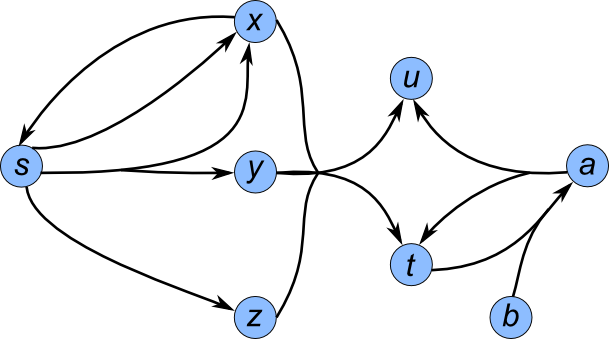

halp is a Python software package that provides both a directed and an undirected hypergraph implementation, as well as several important and canonical algorithms that operate on these hypergraphs.
Use pip to install the latest stable release with: pip install halp
Latest Stable Release: 1.0 - October 8, 2014
halp v1.0 API Documentation
Getting Started
What are directed and undirected hypergraphs?
Simply put, hypergraphs are a generalization of graphs.
A directed hypergraph contains nodes and hyperedges. Each hyperedge connects a tail set of nodes to a head set of nodes (where the tail and head cannot both be empty). A directed edge in a traditional directed graph, where an edge connects from exactly one node to exactly one other node, is a special case of a directed hyperedge.
Similarly, an undirected hypergraph contains nodes and hyperedges. The difference here is that each hyperedge connects a single set of nodes together. An undirected edge in a traditional undirected graph, where two edges are connected to each other, is a special case of an undirected hyperedge.
Using Directed Hypergraphs
The following examples for directed hypergraphs will use the following hypergraph: 
We can create a hypergraph explicitly:
from halp.directed_hypergraph import DirectedHypergraph
# Initialize an empty hypergraph
H = DirectedHypergraph()
# Add nodes 's' and 't' individually with arbitrary attributes
H.add_node('s', source=True)
H.add_node('t', sink=True)
# Add several nodes simultaneously, having the same arbitrary attributes
H.add_nodes(['x', 'y', 'z', 'u', 'a', 'b'], label='grey')
# Add hyperedge from {'s'} to {'x'} with a weight of 1
H.add_hyperedge(set(['s']), set(['x']), weight=1)
# Add hyperedge from {'s'} to {'x', 'y'} with some arbitrary attributes and weight of 2
H.add_hyperedge(set(['s']), set(['x', 'y']), {'color': 'red', 'active': True}, weight=2)
# Add several hyperedges simultaneously, having individual weights
hyperedges = [(['s'], ['z'], {'weight': 2}),
(['s'], ['t'], {'weight': 100}),
(['x'], ['s'], {'weight': 1}),
(['x', 'y', 'z'], ['u', 't'], {'weight': 3}),
(('t', 'b'), ('a'), {'weight': 1}),
(set(['a']), set(['u', 't']), {'weight': 1})]
H.add_hyperedges(hyperedges)
# Note: a hyperedge can be added even if it contains nodes that haven't
# previously been put into the graph; the library will automatically add them!
If a hypergraph is stored in a file similar to:
tail;head;weight
s;x;1
s;y,x;2
s;z;2
s;t;100
x;s;1
z,y,x;u,t;3
a;u,t;1
b,t;a;1
then we can read the hypergraph from the file with:
from halp.directed_hypergraph import DirectedHypergraph
# Initialize an empty hypergraph
H = DirectedHypergraph()
node_delimiter = ','
column_separator = ';'
H.read("hypergraph_filename.txt", node_delimiter, column_separator)
Finally, we can execute an algorithm on an initialized hypergraph:
from halp.directed_hypergraph import DirectedHypergraph
from halp.algorithms import directed_paths
H = DirectedHypergraph()
H.read("hypergraph_filename.txt", ',', ';')
# Execute the "Shortest Sum B-Tree" algorithm with root 's'
Pv, W, ordering = \
directed_paths.shortest_b_tree(H,
's',
directed_paths.sum_function,
True)
# Use the returned result to retrieve the hypertree (a subhypergraph)
sub_H = directed_paths.get_hypertree_from_predecessors(H, Pv, 's', W)
Testing
Unit tests for the package are located in tests/, and can be run with python setup.py test.
The test runner depends on pytest.
Travis CI checks for pep8 compliance on all code. If the code doesn't meet pep8 compliance, the test suite will report a failure.